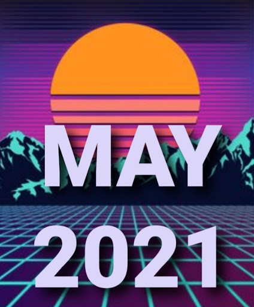

June 1, 2021

My Personal Playlist: The Hits of May 2021
A moment of nostalgia. Future and past collide. Actually, a series of events made me crave the good ol' 80s sound. You all saw how many artists walked that route recently! And my own geekiness made me not only rediscover things like BBS but also discover Halt and Catch Fire (which is crazy good!!!). I'm hooked to the 80s for awhile.
So here it is. Enjoy!
Listen on Spotify
- The Soul Awakening - China Crisis
- Duel - Propaganda
- Play the Game - Queen
- Solsbury Hill - Peter Gabriel
- Ashes to Ashes - David Bowie
- Bonny - Prefab Sprout
- Sensation - Bryan Ferry
- Goodbye Lucille #1 - Prefab Sprout
- Chant No. 1 (I Don't Need This Pressure On) - Spandau Ballet
- Down In The Subway - Soft Cell
- Lie to Me - Depeche Mode
- Barbarism Begins at Home - The Smiths
- Careless Memories - Duran Duran
- Don't Stop The Dance - Bryan Ferry
- Pale Shelter - Tears For Fears
- Talk Talk - Talk Talk
- Omegaman - The Police
- Seven Seas - Echo & the Bunnymen
- Moon Rocks - Talking Heads
- Gift Of Freedom - China Crisis
- Fox on the Run - Sweet
- Pledge Pin - Robert Plant
- When I Write the Book - Nick Lowe
- Sometimes a Fantasy - Billy Joel
- Single Handed Sailor - Dire Straits
- So Far Away - Dire Straits
- Ride Captain Ride - Blues Image
- The House Is Rockin' (With Domestic Problems) - Cheap Trick
- The Waiting - Tom Petty and the Heartbreakers
- What Is Life - George Harrison
- Good Morning Jodge - 10cc
- I Love the Sound of Breaking Glass - Nick Lowe
- Let It Rain - Eric Clapton
- Back On The Streets - Gary Moore
- Heart of the City - Nick Lowe
- Pulling Mussels (From The Shell) - Squeeze
- Heart Of The Night - Poco
- Radio Girl - John Hiatt
- Whenever You're on My Mind - Marshall Crenshaw
- Out In The Street - Bruce Springsteen
- Slipping Away - Dave Edmunds
- Don't Bring Me Down - Electric Light Orchestra
- Black Friday - Steely Dan
- Couldn't Get It Right - Derek Holt
- Skateaway - Dire Straits
- Late in the Evening - Paul Simon
- Heart Of Gold - Neil Young
- King of the Hill - Minutemen
- Does It Float - Dinosaur Jr.
- In Love This Way - Descendents
- Conditioned - Stalag 13
- We're Only Gonna Die - Bad Religion
- Murder Style - Lords Of The New Church
- No Greater Love - New Model Army
- That's When I Reach For My Revolver - Mission Of Burma
- Kick in the Eye - Bauhaus
- The Cutter - Echo & the Bunnymen
- Dancing The Night Away - The Motors
- Ratating Head - The Beat
- Sunny Day - Pigbag
- Musette And Drums - Cocteau Twins
- 10:15 Saturday Night - The Cure
- Harmony In My Head - Buzzcocks
- The Wait - Pretenders
- Happy People - The Weirdos
- Detroit 442 - Blondie
- Last Words - 23 Skidoo
- The Magnificent Seven - The Clash
- Blank Generation - Richard Hell
- Cities In Dust - Siouxsie and the Banshees